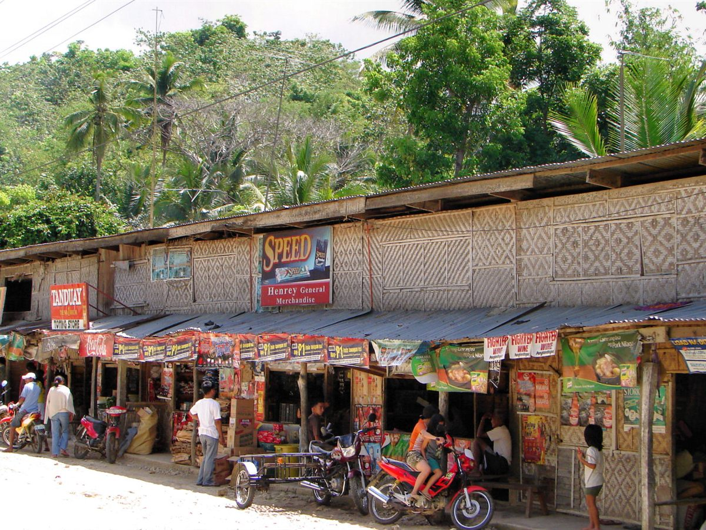

Tambayan
The store as the neighborhood’s news hub and meeting place.Ang tindahan bilang sentro ng balita at tagpuan ng kapitbahayan.
People stay for a softdrink, a chat, or the latest news. The bench outside the store is where the community talks.Tumatambay ang mga tao para sa softdrinks, kwentuhan, o pinakabagong balita. Sa bangko sa labas ng tindahan nag-uusap ang komunidad.
Ang sasagutin ng kwentong itoWhat this story answers
- Who hangs out at the store, and at what time of day?Sino ang tumatambay sa tindahan, at anong oras?
- What news and chismis travel through the bench outside?Anong balita at chismis ang dumaraan sa bangko sa labas?
- How is the store different from a mall or a convenience store?Paano naiiba ang tindahan sa mall o sa convenience store?
Tambayan means a place to hang out, and for many neighborhoods that place is the front of the sari-sari store: a bench, a few plastic chairs, a wall to lean on.Ang tambayan ay lugar na pinagtatambayan, at para sa maraming kapitbahayan, iyon ang harapan ng sari-sari store: isang bangko, ilang plastik na upuan, isang pader na masasandalan.
People come for a softdrink, a sachet of coffee or a small errand, and stay for much longer. The price of staying is small. Buying something is the ticket in, and the tindera rarely minds if you linger.Pumupunta ang mga tao para sa softdrinks, isang sachet ng kape o maliit na utos, at nagtatagal nang higit pa roon. Maliit ang bayad sa pagtambay. Ang pagbili ang tiket papasok, at bihirang mainis ang tindera kung magtagal ka.
News moves through the bench without anyone planning it. Who is getting married, which street is flooded, who needs a tricycle driver, who just came home from abroad. It is a notice board, a radio and a bit of chismis all at once.Kumakalat ang balita sa bangko nang walang nagpaplano. Sino ang ikakasal, aling kalye ang baha, sino ang nangangailangan ng tricycle driver, sino ang kauuwi lang galing abroad. Notice board, radyo at kaunting chismis ito nang sabay-sabay.
Compare this with a mall or an air-conditioned convenience store. Those places are designed for you to buy and go. The sari-sari store is open to the street, and the tindera sees everything from behind her counter. She knows when the kids come home from school and who walks by every morning. The store keeps watch over the block as much as it sells to it.Ikumpara ito sa mall o sa air-conditioned na convenience store. Dinisenyo ang mga lugar na iyon para bumili ka at umalis. Bukas sa kalye ang sari-sari store, at nakikita ng tindera ang lahat mula sa likod ng counter. Alam niya kung kailan umuuwi ang mga bata galing eskwela at kung sino ang dumaraan tuwing umaga. Binabantayan ng tindahan ang kalye gaya ng pagbebenta nito rito.
Researchers describe the same thing. A 2026 study in Acta Medica Philippina calls the sari-sari store “more than a site for economic transactions; it is also a social space,” where “people meet, drink, smoke, and gossip.” The geographer Nelson Turgo, writing in 2013 about a fishing community, describes stores that act as the “eyes and ears of the community.”Ganito rin ang inilalarawan ng mga mananaliksik. Tinatawag ng isang pag-aaral noong 2026 sa Acta Medica Philippina ang sari-sari store na “more than a site for economic transactions; it is also a social space,” kung saan “people meet, drink, smoke, and gossip.” Inilarawan naman ng heograpong si Nelson Turgo, sa isinulat niya noong 2013 tungkol sa isang komunidad ng mangingisda, ang mga tindahang nagsisilbing “eyes and ears of the community.”
That watching has two sides. The bench that welcomes you also notices you. So it is worth asking, at any store, who is on the bench and who is not. A tambayan belongs to the people who sit in it.May dalawang panig ang pagbabantay na iyon. Ang bangkong tumatanggap sa iyo ay napapansin ka rin. Kaya magandang itanong, sa kahit anong tindahan, kung sino ang nasa bangko at kung sino ang wala. Ang tambayan ay pag-aari ng mga taong nakaupo rito.

“Upo ka muna, makipagkwentuhan tayo.”
PinagkunanSources
Prieto, M. L. M., Galigao, G. P., Navarra-Cruz, A. R. S., Jimenez, L. G. R., & Lasco, G. (2026). Sari-sari stores as community pharmacies? A qualitative exploration of sari-sari stores selling medicines in the Philippines. Acta Medica Philippina, 60(15), 61–72. https://doi.org/10.47895/amp.v60i15.13577
Turgo, N. (2013). ‘Here, we don’t just trade goods, we also “sell” people’s lives’: Sari-sari stores as nodes of partial surveillance in a Philippine fishing community. Singapore Journal of Tropical Geography, 34(3), 373–389. https://doi.org/10.1111/sjtg.12033
Page 3 / 5Pahina 3 / 5